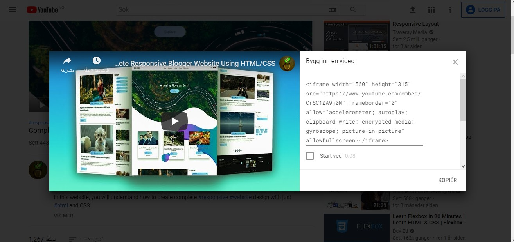

I begynnelsen av 2000-tallet hadde ikke innfødte webteknologier som HTML muligheten til å bygge inn video og lyd på nettet,
så proprietære teknologier som Flash (og senere, Silverlight) ble populære for håndtering av slikt innhold. Denne typen teknologi
fungerte ok, men den hadde noen problemer, inkludert å ikke fungere bra med HTML / CSS-funksjoner, sikkerhetsproblemer og
tilgjengelighetsproblemer. Heldigvis, noen år senere, hadde HTML5-spesifikasjonen fått nye, med <video> og <audio<g -elementene,
og noen skinnende nye JavaScript-API-er for å kontrollere dem. I denne artikkelen vil jeg forklare hvordan du legger til video- og
audio-filer i HTML dokumentene dine med elementene <iframe>, <video> og <audio>, og de forskjellige attributtene til hver.
Legge video
Det er to måter å legge til en video på en HTML-side. Enten ved å bruke et <iframe> eller bruke <video>
<iframe> elementet
Prosessen med å sette inn videoene som er i videoplattformene kalles innebygging, og for å legge inn en video i HTML-filen
må du gå til videosiden på videoplattformen. Under videoen finner du en Del-knapp - velg dette for å vise delingsalternativene.
Velg Embed-knappen, så får du en <iframe> -kode - kopier denne og sett den inn i Inndataboks nedenfor og se hva resultatet er i Output.

Hvordan iframe metode funger
<video> elementet
Vi kan legge til en video på en webside ved hjelp av video elementet. Innen dette elementet kan vi legge til både elementene
'SOURCE' og 'TRACK' i tillegg til et avsnitt av tekst som vises i tilfelle nettleseren ikke klarer å spille av videoen. Hvart
element av de har forskjellige attributter.
Attributtene som gjlder til <video>
CONTROLS: Den har ansvar for utseendet på videokontroll verktøylinjen, og den tar ikke noen verdier.
WIDTH and HEIGHT: Den har kontroll på video visningsområdet
AUTOPLAY: Ansvarlig for å spille av videoen automatisk når siden lastes inn, og den tar ikke noen verdier.
LOOP: Den har ansvar for å spille videoen engang til etter at den slutter, og den tar ikke noen verdier.
MUTED: Ansvarlig for å spille av videoen uten lyd, og den tar ikke noen verdier.
POSTER: Den har ansvar for å sette inn et bilde som vises før du spiller av videoen, og den tar bildebane som et verdi
attributtene som gjlder til <SOURCE>
SRC: Den har ansvar for å bestemme banen til videoen som skal vises, enten det er på datamaskinen eller URL fra nette.
TYPE: Den er ansvarlig for å bestemme video type, og det settes ordet video deretter/video-type inn i verdien. Video-type er
fortrinnsvis en av typene(WebM / OGG / MP4)
<video width="300" controls
autoplay loop muted preload="none">
<source src="photo/resize.mp4" type="video/mp4">
<source src="photo/resize.ogv" type="video/ogv">
Sorry!! Your browser doesn't support video technology
</video>
test video
Legge audio
Metoden for å sette inn en audio fil er veldig lik video metoden, og dette gjøres av <audio> element. det har samme attributtene
som <video> har unntatt (width, height and poster) attributer. Audio-type er fortrinnsvis en av typene(wave/ OGG / MP3)